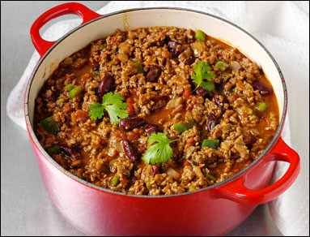

Chili con Carne

Description
When it comes to the story of chili, tales and myths abound.
While many food historians agree that chili con carne is an American dish with Mexican roots, Mexicans are said
to indignantly deny any association with the dish.
Enthusiasts of chili say one possible though far-fetched starting point comes from Sister Mary of Agreda, a
Spanish nun in the early 1600s who never left her convent yet had out-of-body experiences in which her spirit
was transported across the Atlantic to preach Christianity to the Indians. After one of the return trips, her
spirit wrote down the first recipe for chili con carne: chili peppers, venison, onions, and tomatoes.
Another yarn goes that Canary Islanders who made their way to San Antonio as early as 1723, used local peppers
and wild onions combined with various meats to create early chili combinations.
Most historians agree that the earliest written description of chili came from J.C. Clopper, who lived near
Houston. While his description never mentions the word chili this is what he wrote of his visit to San Antonio
in 1828: "When they [poor families of San Antonio] have to lay for their meat in the market, a very little is
made to suffice for the family; it is generally cut into a kind of hash with nearly as many peppers as there are
pieces of meat--this is all stewed together.”
Ingredients
- 1 TBS Olive Oil
- 1 Pound Ground Chuck – at room temperature & gently patted dry (SEE NOTES)
- to taste Kosher Salt and Ground Black Pepper
- 1 small Yellow Onion – small dice (about 1 ½ cups)
- 1 small Bell Pepper – small dice (about 1 cup)
- 2 cloves Garlic – minced
- 1 TBS Chili Powder
- 2 tsp EACH: Ground Cumin, Smoked Paprika, and Dried Oregano
- 2 TBS Tomato Paste
- 1 Cup Beef Broth – (substitute: beer of choice)
- 1 (14 ounce) Can Fire Roasted Diced Tomatoes
- 1 (8 ounce) Can Tomato Sauce
- 1 ½ tsp EACH: Dark Brown Sugar and Worcestershire Sauce
- 1 whole Bay Leaf
Steps
- Brown Beef: In a large pot or Dutch oven, heat the oil over medium-high heat.
Once the oil is shimmering, add the beef and cook, undisturbed for 2-3 minutes, or until edges start to
brown.
Season with a ½ teaspoon of salt and a ¼ teaspoon of pepper.
Use a spatula to flip the beef over and use the back of a wooden spoon to break up the beef into large
crumbles. Cook, stirring occasionally, until beef is browned, but not completely cooked through, about 3-4
additional minutes.
Use a large slotted spoon to transfer the beef to a plate or bowl.
Drain off all but 1 tablespoon of oil from the pan, or if the pan seems dry, add a splash of oil (SEE
NOTES).
- Sauté Vegetables and Aromatics: Reduce the heat under the pot to medium.
Add the onions and bell peppers and cook, stirring occasionally, until softened, about 5 minutes.
Add the garlic, chili powder, cumin, paprika, and oregano. Season to taste with salt and pepper. Cook,
stirring, until fragrant, about 1 minute.
Add the tomato paste and cook, stirring, until the tomato paste is caramelized, about 1-2 minutes.
- Deglaze with Broth, Add Tomato Products, Worcestershire, Bay Leaf: Pour the broth into the
pot and use the
edge of a wooden spoon to scrape up any brown bits stuck on the bottom of the pan. Let cook for 1-2 minutes.
Add the diced tomatoes, tomato sauce, sugar, Worcestershire, and bay leaf to the pot and stir to combine.
Add the browned beef along with any accumulated juices.
- Simmer Texas Chili: Bring the contents to a gentle boil over medium-high heat. Once gently
boiling,
immediately reduce the heat to maintain a simmer and cover the pot.
Let the chili simmer, uncovering to stir a couple times, for 30 minutes.
Uncover the pot and continue to let the chili simmer for 10 minutes, or until the chili is thickened to your
liking, but still saucy.
Use tongs to remove bay leaf and discard. Then, taste the no bean chili recipe and adjust for seasonings to
suit your taste buds.
- Serve No Bean Chili: Ladle warm chili into individual bowls and garnish with your favorite
toppings, like shredded cheese, salsa, and sour cream.
- Enjoy!
Home